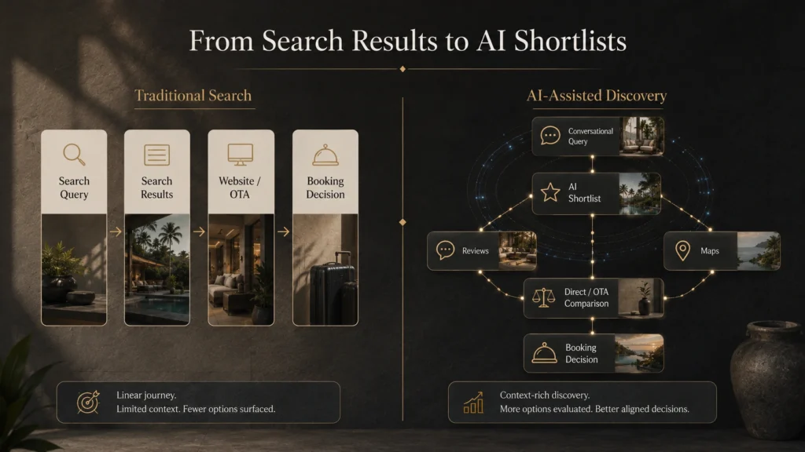
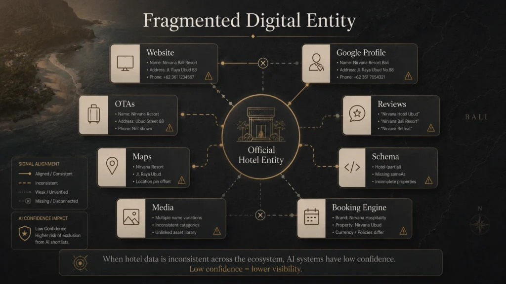
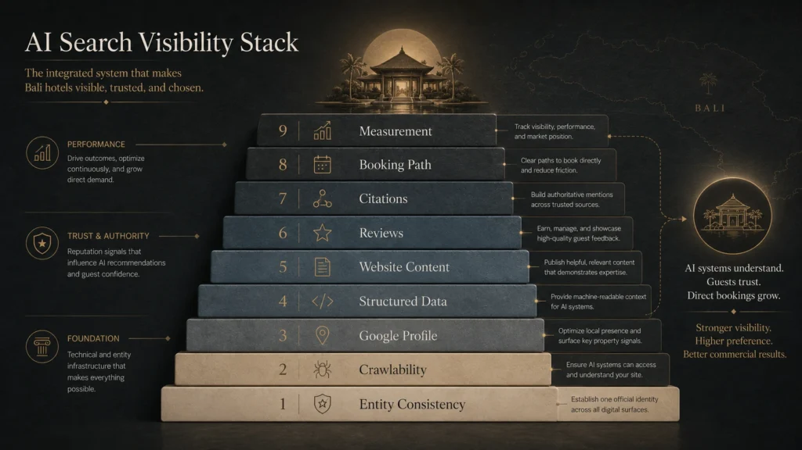
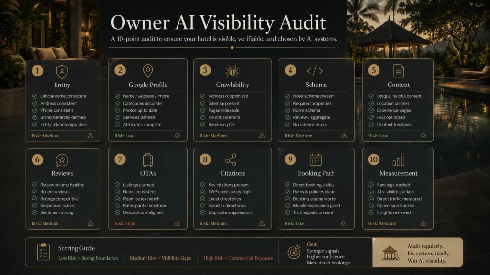

Most Bali hotels will not lose visibility in AI search because the property is weak. They will lose visibility because the digital asset is incomplete, inconsistent, and difficult for machines to verify.
That is the new risk. A hotel can have strong architecture, good service, beautiful rooms, and a loyal guest base. However, it can still be skipped when AI systems assemble a shortlist for “best boutique hotel in Bali,” “luxury wellness retreat near Uluwatu,” or “family-friendly villa resort in Canggu.”
AI search visibility for Bali hotels is no longer only a marketing issue. It is becoming part of hotel distribution, direct booking performance, OTA dependency, reputation management, and long-term asset value.
This article is written for owners, investors, developers, operators, asset managers, and family offices. It is not a tourist guide. The question is not which Bali hotel is “best.” The real question is whether your hotel is visible, understandable, credible, and commercially bookable in an AI-assisted discovery environment.
Key Takeaways
- AI search visibility for Bali hotels is not an SEO hack. It is a digital asset governance issue.
- Google states that AI Overviews and AI Mode do not require special AI markup. Normal SEO fundamentals, indexability, crawlability, and snippet eligibility still matter.
- AI systems may use query fan-out. As a result, one guest query can trigger multiple related searches across location, product, reviews, price, amenities, and credibility signals.
- For owners, the risk is commercial: weaker visibility, higher OTA dependency, lower direct booking capture, weaker rate defensibility, and slower ramp-up.
- The owner-side response is a structured audit: entity consistency, Google Business Profile, schema, content, reviews, citations, crawler access, booking path, and measurement.
Why AI Search Visibility for Bali Hotels Matters Now
AI-assisted travel discovery is moving from novelty to operating reality.
According to SiteMinder’s 2026 travel research, OTAs overtook search engines as the primary starting point for hotel discovery. The report found that 26% of surveyed travellers said they would start with an OTA, while 21% would start with a search engine. AI as a discovery starting point reached 4%, up from 1% the year before. In addition, 80% of travellers said they now want AI-powered capabilities during the booking journey.
The important point is not that AI has already replaced Google, OTAs, or direct booking. It has not. Instead, the discovery journey is becoming more fragmented, conversational, and non-linear.
A guest may ask ChatGPT for a shortlist, compare locations in Google AI Mode, check reviews on Booking.com or Tripadvisor, verify the property on Google Maps, and then book through an OTA because the hotel’s own website does not answer the question clearly enough.
Bali Demand Exists, But Demand Capture Is Not Automatic
For Bali, this matters because the market is large, competitive, and increasingly segmented. BPS recorded 472,070 in-person foreign tourist arrivals to Bali in March 2026, while star-rated hotel room occupancy was 52.54%, according to the BPS Bali March 2026 tourism overview.
Demand exists. However, visibility, trust, distribution, and conversion still decide who wins.
This is why owners should treat AI visibility as part of the same commercial discipline as hotel feasibility, product logic, and investment validation. The hotel may be physically strong, but if the market cannot find, understand, verify, and book it, the asset is commercially under-built.

What AI Search Visibility for Bali Hotels Means
AI search visibility for Bali hotels is the ability of a property to be found, understood, verified, compared, and referenced by AI-assisted discovery systems such as Google AI Overviews, Google AI Mode, Bing/Copilot, ChatGPT Search, Perplexity, and other answer engines.
For a Bali hotel, this means the property’s digital footprint must clearly answer several practical questions:
- What is the official hotel name?
- Where exactly is it located?
- What category is it: hotel, resort, villa resort, wellness retreat, boutique hotel, branded residence, or serviced apartment?
- What guest segment is it built for?
- What room types, amenities, experiences, and service promises are real?
- What do recent guests say?
- Is there a credible direct booking path?
- Are the same facts repeated consistently across the website, Google Business Profile, OTAs, maps, review platforms, media references, and structured data?
Google explains that pages do not need special AI markup to appear in AI Overviews or AI Mode. They need to meet standard Google Search requirements, be indexable, and be eligible to appear with a snippet. This is explained in Google’s guidance on AI features and your website.
Google also explains that its generative AI search systems may use retrieval-augmented generation and query fan-out. In practice, this means Google may retrieve multiple related sources from its Search index to generate more useful responses. This is covered in Google’s generative AI search optimization guide.
Therefore, a hotel is not only competing on one keyword. It is competing across a cloud of related questions.
The Core Problem: Beautiful Hotels, Weak Digital Entities
Many Bali hotels are stronger as physical experiences than as digital entities.
The property may look credible in real life. The rooms may be well designed. The team may deliver strong service. The location may be attractive. But online, the hotel may appear fragmented, under-described, inconsistent, or difficult to verify.
This creates a machine-recognition problem.
A human guest may understand that “Villa X,” “X Resort Bali,” “X Canggu Villas,” and “The X Retreat” are probably the same property. An AI system may not. It may see disconnected entities with unclear category, unclear location, inconsistent attributes, and weak confidence.
Why Fragmented Hotel Data Becomes a Visibility Problem
AI discovery systems are not only reading your homepage. They may cross-check:
- Google Business Profile;
- Google Maps;
- OTAs;
- review platforms;
- the hotel website;
- travel media;
- social signals;
- schema markup;
- public citations;
- booking data surfaces;
- location and amenity references.
If those signals do not agree, the hotel becomes harder to recommend with confidence.
This is the same strategic mistake that appears in many hospitality developments: the visible product is created before the operating and commercial logic is properly defined. Zenith covers this issue more broadly in its article on hotel Product DNA, where the central point is simple: the guest promise, operating model, spatial logic, and commercial thesis must connect before the market can understand the asset.

What Most Owners Get Wrong About AI Search
Most owners make one of three mistakes.
Mistake 1: Treating AI Visibility as an SEO Plugin Issue
Schema, metadata, and technical SEO matter. However, they do not solve weak positioning, vague content, inconsistent naming, thin reviews, or an unclear booking path.
Structured data is a support layer, not the strategy.
For example, adding Hotel schema to a website will not fix a property that has inconsistent naming across OTAs, weak Google Business Profile data, vague room descriptions, no recent reviews, and no clear direct booking value.
The correct sequence is:
- clarify the hotel’s commercial and guest logic;
- align the digital entity across all major platforms;
- make the hotel’s facts crawlable and verifiable;
- support those facts with structured data;
- measure whether visibility creates qualified demand.
Mistake 2: Thinking AI Will Discover the “Best” Hotel Naturally
AI systems do not visit Bali, inspect operations, test service recovery, evaluate housekeeping consistency, or review owner governance. They infer from available signals.
Therefore, if the best property has weak content, missing attributes, unmanaged reviews, poor crawlability, inconsistent naming, and no strong third-party corroboration, it can lose to a less interesting but better documented competitor.
This is uncomfortable, but important.
AI will not always recommend the best hotel. It will recommend the hotel it can understand, verify, compare, and trust.
Mistake 3: Measuring Success by Visibility, Not Business Quality
Appearing in an AI answer is not enough.
The commercial question is whether visibility produces qualified demand, stronger direct booking capture, better channel mix, stronger ADR confidence, and lower acquisition dependency.
A hotel can be visible and still underperform commercially if:
- the direct website does not convert;
- rates are unclear;
- packages are poorly explained;
- reviews do not support the positioning;
- wellness or experience claims are vague;
- the booking engine is weak on mobile;
- the guest moves back to an OTA for trust and convenience.
As a result, AI search visibility must be measured as part of asset performance, not as a vanity marketing metric.
The Zenith View: AI Visibility Is an Asset Performance Issue
The operator-first view is simple:
AI search visibility is not a marketing decoration. It is part of the hotel’s commercial operating system.
For a hotel owner, AI visibility sits between brand positioning, distribution, revenue management, reputation, content governance, and pre-opening readiness.
A design-led consultant may ask: “Does the website look premium?”
Zenith asks:
- Can AI systems understand the hotel’s category and guest promise?
- Are the same facts repeated across Google, OTAs, the website, and review channels?
- Does the hotel have enough specific content to answer high-intent questions?
- Are wellness, spa, medical, family, F&B, and experience claims controlled?
- Is the direct booking path credible after discovery?
- Are reviews recent, answered, and aligned with the positioning?
- Are owners measuring AI citations, search queries, referral quality, and conversion?
- Does the pre-opening plan include digital entity creation before launch?
This is where the commercial issue appears.
Poor AI visibility does not only reduce impressions. It can increase OTA dependency, weaken direct demand, slow ramp-up, dilute ADR confidence, and make the asset more dependent on paid traffic.
This is also why digital visibility cannot be separated from operational hotel design in Bali. If the physical asset, guest journey, staffing model, service promise, content architecture, and booking path are not aligned, the hotel becomes harder to sell, operate, and defend commercially.
The AI Search Visibility Stack for Bali Hotels
The owner-side question is not “Do we have SEO?”
The better question is: “Is the hotel digitally structured enough for AI-assisted discovery systems to understand, verify, and recommend it?”
Owner-Side AI Visibility Stack
| Layer | What It Means | Owner-Side Risk If Weak |
|---|---|---|
| Entity consistency | Same official name, address, category, phone, URL, and descriptions across platforms | AI systems may confuse or split the property entity |
| Crawlability and indexability | Website can be crawled, indexed, rendered, and shown with snippets | Content may not be eligible for AI search surfaces |
| Google Business Profile | Verified profile with accurate hotel details, amenities, attributes, images, and booking links | Local discovery and Maps visibility weaken |
| Structured data | Valid Hotel / LodgingBusiness / LocalBusiness / Organization / Breadcrumb / Article schema where appropriate | Machines have less structured confirmation of key facts |
| Specific website content | Clear pages for rooms, location, wellness, F&B, family, meetings, policies, FAQs, offers | AI cannot extract useful answers |
| Review governance | Recent, relevant, responded-to guest reviews across key platforms | Trust signals weaken |
| Third-party citations | Mentions in credible travel, hospitality, destination, and media sources | AI has fewer external corroboration points |
| Booking path | Direct booking engine, rate clarity, packages, mobile UX, tracking | AI-driven demand leaks to OTAs |
| Measurement | GSC, GA4, Bing Webmaster Tools, prompt benchmarks, CRM inquiry tracking | Owners cannot tell whether visibility creates value |
Why Google Business Profile Matters
Google Business Profile is especially important for hotels because Google allows verified hotel profiles to manage hotel details, amenities, attributes, highlights, booking links, and certain hotel-specific information. This is explained in Google’s help article on managing hotel information in Business Profile.
For Bali hotels, this matters because hotel discovery is highly local. If the Google profile is incomplete, outdated, duplicated, miscategorized, or inconsistent with OTA and website data, the property becomes harder for both users and AI-assisted systems to understand.
Why Structured Data Must Stay Factual
Schema also matters, but it must be used accurately. Schema.org’s Hotel and LodgingBusiness types include hotel-relevant properties such as check-in time, check-out time, number of rooms, pets allowed, and official star rating.
Google’s LocalBusiness structured data guidance also explains how structured data can help Google understand business information such as hours, departments, reviews where appropriate, and reservation actions.
In short, structured data should confirm the hotel’s real facts. It should not be used to exaggerate, fabricate, or over-claim.

Operational Implications for Owners and Operators
AI visibility cannot be left only to a web agency.
It requires operational ownership because the data comes from real business decisions.
| Operating Area | Required Discipline |
|---|---|
| Brand / Product DNA | Define the hotel category, guest, promise, positioning, and experience logic clearly |
| Revenue / Distribution | Align direct booking, OTA listings, metasearch, rate plans, packages, and channel descriptions |
| Front Office / Reservations | Track recurring guest questions and convert them into website and FAQ content |
| Housekeeping / Engineering | Keep amenity, room, facility, pool, spa, gym, accessibility, and maintenance facts current |
| Spa / Wellness / Medical Claims | Separate hospitality, wellness, and licensed medical claims where relevant |
| Marketing | Maintain content, local profiles, media references, images, review responses, and search performance |
| Owner / Asset Manager | Review visibility as part of commercial governance, not as a junior marketing task |
For pre-opening hotels, this should start before launch.
A hotel that opens without a verified local profile, structured website content, OTA consistency, review acquisition plan, and direct booking path is already late. The first months after opening are often when AI systems, review platforms, and search engines start forming the public understanding of the asset.
For existing hotels, the work starts with an audit. Owners need to know where the asset is digitally clear, where it is fragmented, and where the commercial leakage occurs.
Commercial Implications: Direct Demand, OTA Leakage, ADR, and NOI
The owner-side issue is not “Can we rank?”
The owner-side issue is: Can we capture qualified demand at an acceptable cost of acquisition?
Poor AI visibility can affect the business in several ways.
1. Direct Booking Leakage
If AI systems mention the property but the direct site is weak, guests may continue to OTAs for clarity, comparison, trust, and booking confidence.
This is not only a marketing issue. It affects net revenue, commission cost, remarketing control, and guest data ownership.
2. Lower Rate Confidence
If the hotel’s positioning is vague online, it becomes harder to defend premium ADR.
Luxury pricing needs digital proof:
- room quality;
- location logic;
- service promise;
- amenities;
- wellness or experience depth;
- guest reviews;
- cancellation policies;
- direct booking benefits;
- photography and video credibility;
- third-party validation.
Without that proof, a premium hotel with generic content becomes easier to compare on price.
3. Higher Paid Media Dependency
If organic and AI discovery are weak, the owner may compensate with ads, influencers, OTA promotions, and tactical discounts.
That may generate demand. However, it often increases acquisition cost.
4. Weaker Pre-Opening Ramp
For new hotels, weak digital entity setup delays visibility formation. This can make early demand more dependent on paid traffic and third-party distribution.
Pre-opening is not only about construction, hiring, and SOPs. It is also about creating a credible, structured, and searchable market identity before the property opens.
5. Reduced Asset Defensibility
In a crowded Bali market, a hotel with strong digital clarity can be easier to understand, compare, and recommend. That can support occupancy, rate, reputation, and asset value over time.
Therefore, AI search visibility belongs in owner reporting. It should be treated as part of commercial resilience, not as a narrow marketing KPI.
This point also connects directly to broader investor logic. As Zenith explains in its article on Bali hotel investment structures, the owner’s real risk is not only the product itself. Durable performance depends on whether the structure, operating model, distribution strategy, and commercial controls all work together.
Owner Checklist for AI Search Visibility for Bali Hotels
Before paying for a new SEO campaign, influencer push, paid ads, or website redesign, owners should audit the digital asset first.
| Check | Owner Question |
|---|---|
| Entity audit | Is the hotel name, address, phone, website, and category identical across all major platforms? |
| GBP audit | Is the Google Business Profile verified, accurate, complete, and actively managed? |
| Website crawl audit | Are key pages indexable, mobile-safe, fast, and snippet-eligible? |
| Schema audit | Does the website use valid, page-relevant schema without unsupported AI metadata? |
| Content audit | Does the site answer high-intent questions with specific facts, not brochure language? |
| Review audit | Are reviews recent, responded to, and aligned with the target guest promise? |
| OTA consistency audit | Do Booking.com, Expedia, Agoda, Google, and the direct site describe the same product? |
| Citation audit | Are there credible third-party mentions that reinforce the hotel’s category and quality? |
| Booking path audit | Can a user move from discovery to direct booking without confusion? |
| AI benchmark | Does the hotel appear in relevant prompts across ChatGPT Search, Google AI Mode, Bing/Copilot, and Perplexity? |
| Measurement audit | Are GSC, GA4, Bing Webmaster Tools, and conversion tracking configured correctly? |
Measurement is becoming more concrete. Bing’s AI Performance tool reports AI citations, grounding queries, cited pages, and citation trends across Microsoft AI experiences, according to the Bing Webmaster Blog.
Crawler governance also matters. OpenAI’s crawler documentation separates OAI-SearchBot, which is used for search inclusion, from GPTBot, which is used for model training. Hotel owners should understand this distinction before blocking AI-related crawlers blindly. OpenAI explains the difference in its official crawler documentation.
This is not a technical detail for the IT team only. If the website blocks useful discovery crawlers, the hotel may reduce its own visibility in AI-assisted search environments.
A Necessary Warning: Do Not Try to Manipulate AI Search
AI visibility must be built through real evidence, not manipulation.
Google’s spam policies now explicitly include attempts to manipulate generative AI responses in Google Search. Sites that violate Google’s spam policies may rank lower or not appear in results at all, according to Google’s spam policies for web search.
For hotels, this means owners should avoid:
- fake “best hotel” articles;
- artificial review generation;
- hidden keyword stuffing;
- doorway pages for every micro-location;
- fabricated citations;
- misleading wellness or medical claims;
- AI-generated content at scale without real operational value.
The safer and stronger strategy is to make the hotel genuinely easier to understand, verify, and book.
That means better data, better content, better local profiles, better review governance, better direct booking infrastructure, and better commercial measurement.
FAQ
What is AI search visibility for Bali hotels?
AI search visibility for Bali hotels is the ability of a property to appear, be understood, and be credibly referenced in AI-assisted discovery systems such as Google AI Overviews, Google AI Mode, Bing/Copilot, ChatGPT Search, and Perplexity. It depends on normal search fundamentals, entity consistency, local profile accuracy, crawlable content, structured data, reviews, third-party trust signals, and a clear booking path.
Does my hotel need special AI schema to appear in Google AI Overviews?
No. Google states that there are no additional technical requirements to appear in AI Overviews or AI Mode beyond meeting normal Google Search requirements, being indexed, and being eligible to appear with a snippet. Structured data is still useful, but it is not a special AI visibility switch. It should support accurate understanding of the hotel, not replace strong content, local profile accuracy, reviews, and booking clarity.
Is Google Business Profile still important for hotel AI visibility?
Yes. Google Business Profile remains important because hotel discovery is location-sensitive and profile information appears across Search and Maps. Verified hotel profiles can manage amenities, services, attributes, hotel highlights, and booking-related details. For Bali hotels, incomplete or inconsistent profile data can weaken local discovery and reduce confidence across search and AI-assisted journeys.
Can AI search reduce OTA dependency?
Potentially, but not automatically. AI search may help guests discover a hotel earlier or through a more conversational path. However, if the hotel’s direct website is weak, unclear, slow, untrusted, or poorly bookable, that demand can still leak to OTAs. The owner’s objective should be to connect AI visibility to direct booking readiness, rate clarity, and conversion tracking.
Should a pre-opening hotel in Bali care about AI visibility?
Yes. A pre-opening hotel should build its digital entity before launch. That includes official naming, location signals, Google Business Profile preparation where possible, website structure, schema, opening timeline content, press and citation strategy, direct booking readiness, review acquisition planning, and measurement setup. Waiting until after opening often creates avoidable visibility and ramp-up delays.
What should Zenith check first?
Zenith would start with an owner-side AI visibility assessment covering entity consistency, crawlability, Google Business Profile, structured data, OTA consistency, website content, reviews, third-party citations, direct booking path, crawler access, and measurement. The goal is not vanity visibility. The goal is qualified demand, better channel mix, stronger commercial control, and lower avoidable acquisition leakage.
Summary Takeaways
- AI search visibility for Bali hotels is becoming part of hotel distribution, not just SEO.
- Bali hotels with weak digital entity governance risk being skipped, misunderstood, or outcompeted in AI-assisted discovery.
- Google’s guidance supports fundamentals: crawlability, indexability, useful content, local business details, and technical clarity.
- Structured data helps, but it is not a magic AI ranking factor.
- The owner-side objective is commercial: direct demand, ADR confidence, lower OTA leakage, cleaner pre-opening ramp, and stronger asset defensibility.
- The right response is a disciplined AI Search Visibility Assessment, not random GEO tactics.

CTA
Before spending more on paid ads, influencers, SEO retainers, or a website redesign, audit whether your hotel is visible and understandable to AI-assisted discovery systems.
Zenith Hospitality Global helps owners, investors, developers, and operators assess AI search visibility, digital entity integrity, direct booking readiness, and commercial discovery risk for Bali hospitality assets.
Request a Zenith AI Search Visibility Assessment before spending more on marketing that may not fix the real visibility problem.
Start a conversation